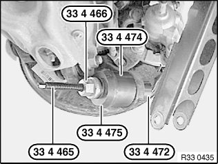
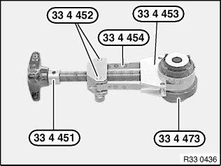
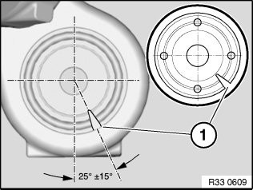
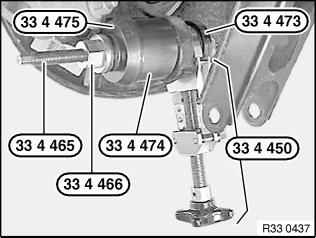

33 32 031 Replacing Rubber Mount for Trailing Arm in Wheel Carrier
33 32 031 Replacing rubber mount for trailing arm in wheel carrierSpecial tools required:
Note:
E90, E91 from 09/2008:
For driving dynamic reasons, both rubber mounts must be replaced on first replacement. After replacing the rubber mounts, mark wheel carriers with punch marks. If the punch marks are provided, the rubber mounts can be changed again individually.
Necessary preliminary tasks:
^ Remove trailing arm from wheel carrier

Removing rubber mount:
Remove rubber mount with special tool 33 4 465, 33 4 466, 33 4 475, 33 4 474 and 33 4 472.

Installing new rubber mount:
Insert rubber mount with spray-on points facing upwards in special tool 33 4 451, 33 4 452, 33 4 454, 33 4 453 and pull together.
Insert rubber mount in special tool 33 4 473.

Important!
Spray-on points of rubber mount must point to rear!
Align rubber mount by way of slot (1) at an angle to wheel carrier.

Pull rubber mount with special tool 33 4 465, 33 4 466, 33 4 475, 33 4 474 and 33 4 473 partially into the wheel carrier.
Remove special tool 33 4 450 and pull in rubber mount as far as it will go.
After installation:
^ Carry out wheel/chassis alignment check